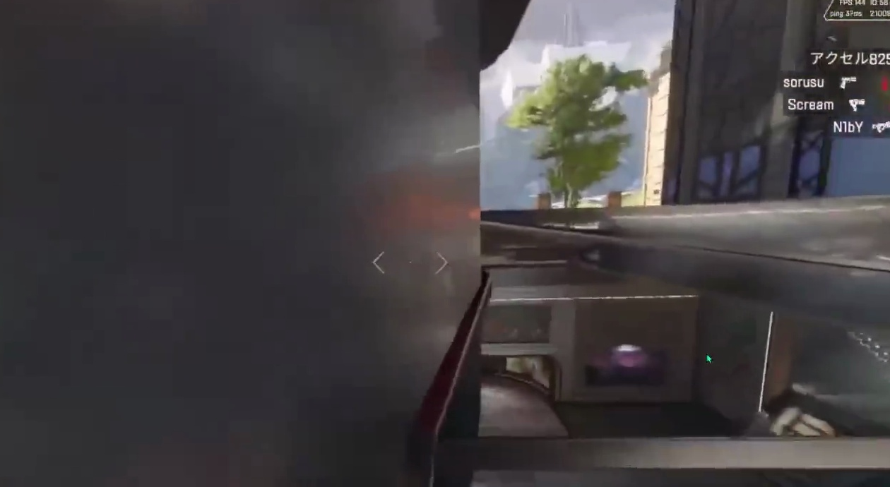
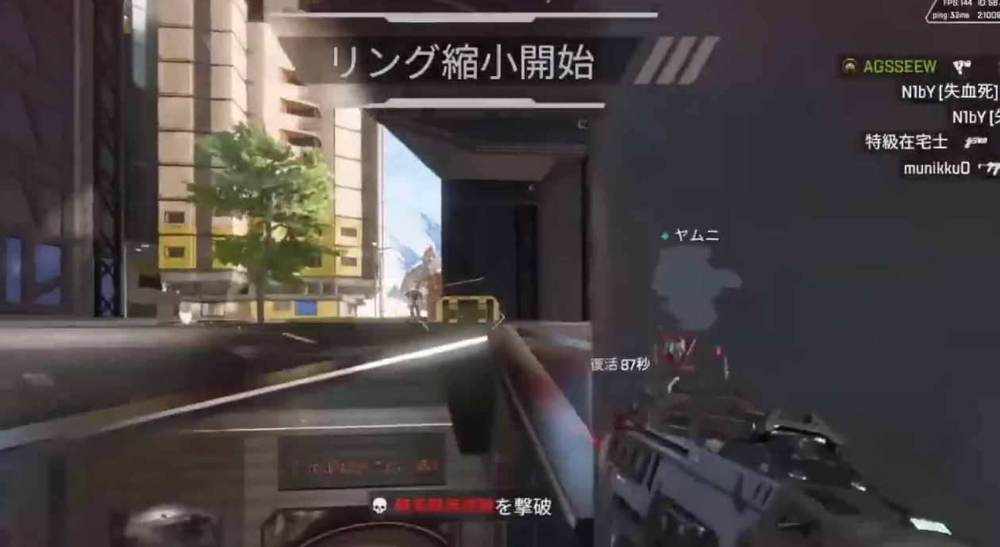

3D FIGHT REPLAY · 2026-10-20
博物館の中を、床と階段から組み立てる
Monumentの博物館を対象に、展示室、中央の展示台、壁面展示、二段階の階段と中央の斜路、その先の売店、ガラス屋根をモデルにしました。屋根や手前の壁を外した表示と、床の高さからの表示を切り替えられます。
映像で見えた構造を参考に作った、内部配置の仮説モデルです。S17の見学映像で、展示室から売店まで歩いてつながることを確認し、モデルも接続しました。ただし、実寸・高さ・全体地図の中での向きは未測量です。実際の動画との対応は下の検証欄に示し、模型を表示できただけで復元成功とはしていません。
実際の動画とモデルを対応させる検証
映像の階段の角と開口部の角に印を付け、モデル上の同じ角を結び付けました。そこから、そのフレームを撮ったカメラの位置と向きを計算します。右側の図は、計算したカメラから見たモデルです。寸法調整に使った画像には「調整用」と表示し、別フレームの検証結果と区別します。印のずれは画像上のピクセル数で表し、実際の距離の誤差とは区別します。
元のYouTube動画でこの場面を見る。原映像は転載せず、投稿者の動画を表示しています。埋め込みが再生できない場合はリンクをご利用ください。
照合データを読み込み中です。
今回分かった問題：手前の台座で隠れた境界を、階段の本当の角として選んでいた可能性があります。見えない角は未使用に訂正します。また、開口部の幅を階段全幅と同じにする仮定にも根拠が足りません。下の調整用投影が合って見えても、建物の寸法を確定できたとは扱いません。
検証画像では、橙色はカメラ計算に使った6点、水色は姿勢計算に使わずずれの検査に使った4点です。寸法調整用の画像では全点を計算に使い、全て橙色で表示します。ただし、この10か所は別の時刻の寸法調整でも使っているため、「未知の形状に対する検証点」ではありません。モデルの寸法調整用と、時刻が異なる画像での確認を分けています。合格しないフレームは位置不明とし、前後の位置をつないで表示していません。
フレーム別の結果 ／ 対応点・時刻・仮定 ／ 寸法調整の全試行
映像の特徴から直接作った、小さな3D点群
階段の角を人が選ぶ方法とは別に、壁や展示物の模様を画像間で探しました。432.8秒と433.0秒の2枚から、相対的な3D点を96個取得しています。水色の点がその点群です。人物や建物の完成モデルではなく、位置関係の手がかりとなる点の集まりです。
点群を読み込み中です。
橙色は点群を作るために使った2枚のカメラ位置、緑色は別時刻の検査を通った位置、白い枠は選択中の位置です。432.8〜433.2秒を50ミリ秒ごとに全件検査し、元の2枚を除く7枚中4枚が基準を通りました。途中で3枚失敗しているため、連続した移動の復元にはなっていません。さらに先の434.2秒も不明です。
この点群は最初のカメラを基準にした座標です。上の建物モデルやミニマップの位置へは、まだ接続できていません。2枚のカメラ間の移動を1単位とするため、メートル単位の寸法ではありません。特徴点が増えても、それだけで建物全体の復元完了とはしていません。
この時刻を元動画で見る ／ 点群・長い区間の結果 ／ 短い区間の全検査結果 ／ 画角の仮定を変えた比較
14秒のレビュー動画
上からの全景、水平な入口、床に近い高さ、二段階の階段と斜路、接続した売店を順に確認できます。カメラは説明のために置いたもので、元動画から復元した視点ではありません。
屋根や壁を外して、内部を見る
内部モデルを読み込んでいます。
形状をクリックすると、その構造を映像で確認できたかを表示します。展示物の絵柄やゲームの3Dアセットは使わず、独自の簡略形状で表しています。
水色の線とスライダーは、作成した床と階段のつながりを確認するためのものです。実際にプレイヤーが歩いた軌跡ではありません。展示台を避ける経路をモデル内で確認していますが、ゲーム内で同じ経路を歩けることは未検証です。
確認できたつながりと、まだ仮定の寸法
| 場所 | 映像で確認したこと | 未確認・仮定 |
|---|---|---|
| 東側の入口 | 外から展示室へ、短い水平な通路で入る | 入口まで長い下降階段があるという旧案は撤回。正確な通路幅は未測量 |
| 展示室 | 中央展示、左右の壁面展示、ガラス屋根 | 寸法、展示物の正確な配置、全体地図に対する向き |
| 展示室から売店 | 左右の階段と中央の斜路、その先の中間の部屋、さらに階段・斜路、売店の入口 | 各段差の高さ、部屋同士の距離。外へ上がる左右の階段の接続先も不明 |
| 自分の戦闘映像 | 上から見える床の開口、下の室内、階段 | 展示室内を歩く映像は含まれず、内部全体との正確な対応は未確認。室内の自分・敵の位置は生成していません |


連続したつながりの根拠は、The Apex Legends Museum (Full Tour) の7分14秒〜7分25秒です。この区間は展示室から売店への移動が見えます。動画全体には編集があり、全編が一続きの散歩とはしていません。別の内部展示の参考はSeason 17紹介動画の2分12秒以降です。2分50秒以降は外部入口、3分20秒以降は売店が映ります。この動画は場面を切り替えた紹介映像で、入口から全ての部屋を歩いてつないだ映像ではありません。第三者の原映像・静止画はこの共有ページにコピーしていません。
全域モデルの中へ、どう置いたか
自分の動画のミニマップを全体地図へ照合した変換を使い、以前の局所モデルの平面範囲を、全域モデルと同じ座標へ移しました。「全域の中で見る」で、同じ場所まで引いて確認できます。この処理で分かるのは大まかな平面位置です。室内の正確な位置、床の高さ、どの階にいるかは確定していません。
内部を空けるため、この建物付近に重なっていた粗い屋根候補と地面を、内部表示用のデータから取り除きました。全域の地面が地下室を埋めたり、屋根の箱が出入口を塞いだりしないようにしています。元の全域モデルは別データとして残しています。
モデルと検証結果を保存する
床と階段の端の接続、出入口の空き、展示台を通り抜けない経路、未知の行き先をつながないこと、周囲の地面や岩が室内を埋めていないことを検証しています。これは作成したモデルの整合性の確認で、実際の建物との寸法一致を証明するものではありません。
この内部モデルで、プレイヤーや敵の階層を自動判定したり、遮蔽物で被弾を防げるかを判断したりする精度は、まだ実証していません。連続した見学映像は確保できました。次の課題は、複数の視点で同じ角や段差が画像に合う形状と、安定したカメラ位置の推定です。